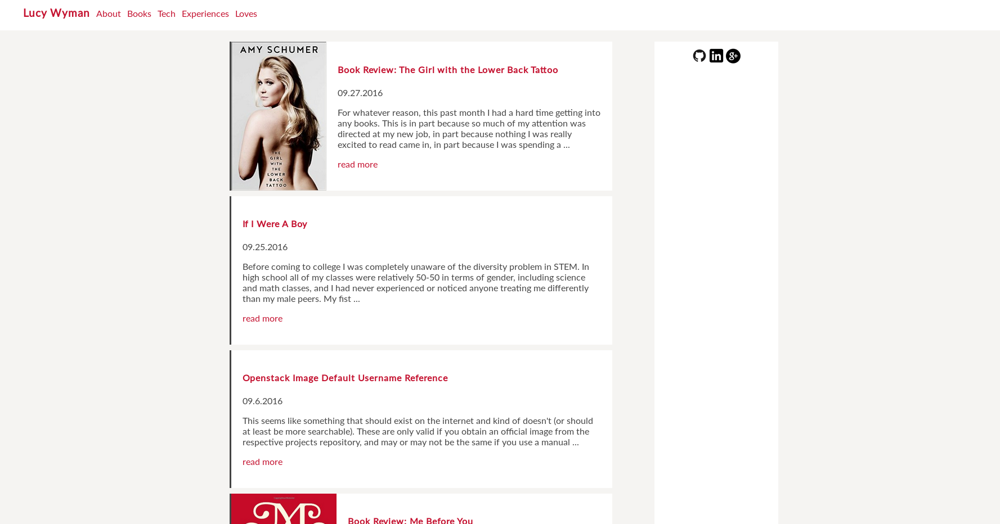
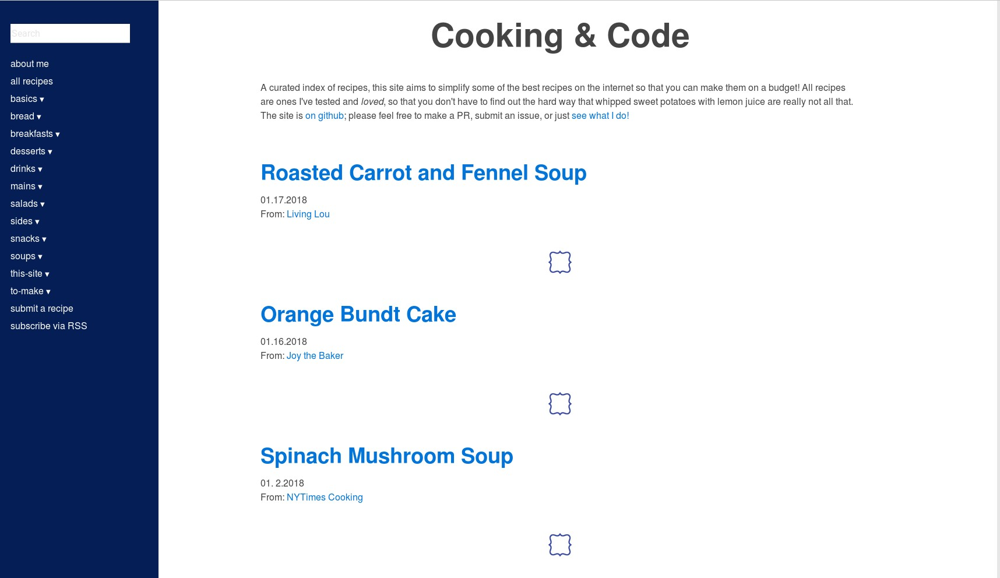
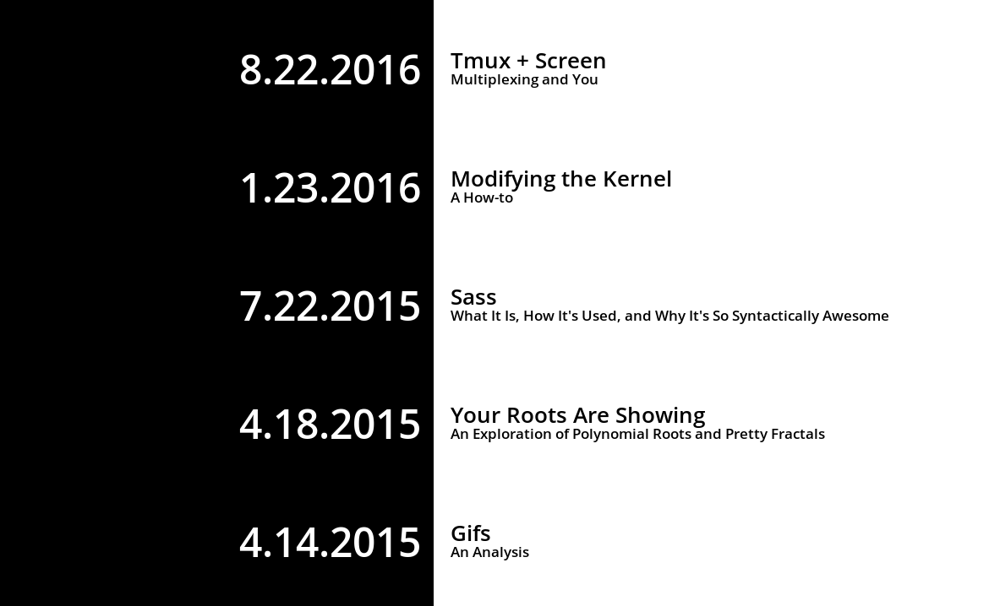
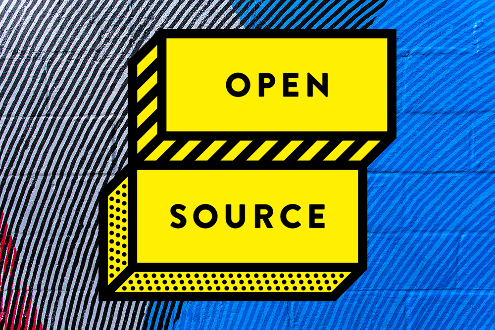

Lucy Wyman

I'm a software engineer for Puppet, where I'm currently working on our open source remote task runner Bolt. I graduated from Oregon State University with a BS in Computer Science in June 2016, where I worked as a Front-End Engineer for the OSU Open Source Lab. In my free time I enjoy hanging out with friends, hiking, experiencing new things, and enjoying a wide variety of podcasts, tv shows, blogs, books, and other media.
|

blog.lucywyman.me |

recipes.lucywyman.me |
|

slides.lucywyman.me |
|

How Can I Contribute? (image) |
Linux Jargon: From AFK to Zero Day (image) |

Sass: Why it's so Syntactically Awesome |